DISEÑO PARA 3D · GUÍA 1
Primer rig: joints, FK, skin e IK sobre un brazo de un modelo humanoide.
1. Un joint es un punto con una orientación propia dentro de una jerarquía. Se rota; rara vez se traslada.
2. El skin vincula la malla a los joints. Sin skin, la malla no responde al movimiento de los joints.
3. Cuando el resultado no es el esperado, la causa suele estar en la orientación de los joints, en el estado de la malla o en los pesos.
| Parte | Contenido | Duración |
|---|---|---|
| 1 | Preparación de Maya y atajos nuevos | 10 min |
| 2 | Padres e hijos: jerarquía con piezas sueltas (sin joints) | 20 min |
| 3 | Creación y orientación de los joints | 25 min |
| 4 | FK: poses mediante rotación de joints | 10 min |
| 5 | Skin y pesos | 25 min |
| 6 | IK: desplazar la mano y que el brazo la siga | 15 min |
| 7 | Entrega: el brazo derecho del modelo | 45 min |
El modelo es una figura humanoide en T-pose, expresada en centímetros. El personaje mira hacia el frente de la escena (+Z); por eso su brazo izquierdo queda en el lado +X (a la derecha de la pantalla en la vista frontal) y su brazo derecho en el lado −X. La demostración se hace sobre el brazo izquierdo; la entrega, sobre el derecho.
Carpeta escenas que acompaña esta guía:
modelo_completo.ma: la figura completa.brazo_piezas.ma: el brazo izquierdo cortado en tres piezas sueltas (parte 2).brazo_base.ma: el brazo izquierdo como una sola malla (partes 3 a 6).brazo_derecho_base.ma: el brazo derecho como una sola malla (parte 7, entrega).brazo_joints.ma, brazo_skin.ma, brazo_ik.ma: estado esperado del brazo izquierdo al terminar las partes 3, 5 y 6. Se consultan solo en caso de bloqueo.Las capturas son de Maya 2027. En las versiones 2022 a 2025 los menús y botones son casi idénticos.
brazo_base.ma.① Menu set. ② Menús de rigging. ③ Outliner: lista de todo lo que contiene la escena. ④ Visor. ⑤ Channel Box: valores del objeto seleccionado.
Casi todo el trabajo se realiza en la vista frontal. En el menú del visor:
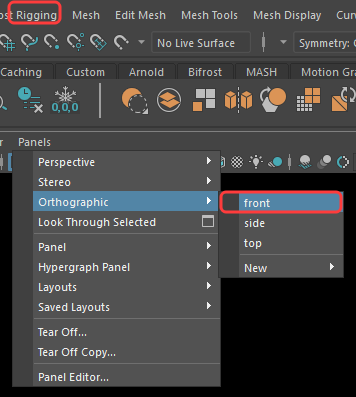
Panels ▸ Orthographic ▸ front.
X (mantenida): ajuste a la cuadrícula. Mientras se mantiene pulsada, lo que se arrastra salta de línea en línea de la cuadrícula en lugar de moverse de forma continua. Permite ubicar un elemento en una posición exacta.
D (mantenida): editar solo el pivote. El pivote es el punto alrededor del cual gira un objeto. Con D pulsada, el manipulador deja de mover el objeto y mueve únicamente el pivote. Al soltar D, todo vuelve a la normalidad.
P : parent. Convierte un objeto en hijo de otro. Se explica en la parte 2.
En Maya, la relación entre dos objetos puede entenderse como la de un padre y un hijo. A esa relación se le denomina parent (en inglés, “padre”). Un ejemplo cotidiano es un padre que lleva a su hijo de la mano:
Al rotar el hombro, se mueve todo el brazo. Al rotar el codo, solo se mueven el antebrazo y la mano. Al rotar la mano, el resto del brazo permanece quieto. Recuerde esta regla: el movimiento se hereda de padres a hijos, nunca al revés.
El Outliner presenta esta familia como un árbol genealógico: los hijos aparecen anidados debajo de su padre.
En el rigging se usa con frecuencia el término constraint (en inglés, “restricción” o “atadura”). También permite que un objeto siga a otro, pero sin que exista parentesco entre ambos. Un ejemplo es un perro sujeto con una correa: el perro no es hijo del dueño ni pertenece a su “familia” en el Outliner, pero va atado a él y, cuando el dueño se desplaza, lo arrastra.
| Parent | Constraint | |
|---|---|---|
| Imagen | Un padre que lleva al hijo de la mano | Un dueño que lleva al perro con una correa |
| Relación | Son familia: se refleja en el Outliner | No son familia: cada objeto permanece en su sitio de la jerarquía |
| Qué se hereda | Todo: posición, rotación y escala | Solo lo que se elija (únicamente posición, únicamente rotación, etc.) |
| Cómo se deshace | Con Unparent | Se puede quitar o regular en cualquier momento (cuánto sigue) |
En esta guía solo se utiliza parent. Los constraints se aplican en la clase del cuerpo, para conectar las curvas que el animador manipula (los controles) con los joints.
Abra brazo_piezas.ma: es el mismo brazo izquierdo, cortado en tres piezas (brazo, antebrazo y mano), en vista frontal. Todavía no existe parentesco entre ellas.
Seleccione el antebrazo y active la rotación (E). El giro se realiza alrededor del pivote, que por defecto está en el centro de la pieza. Un codo no gira por el centro del antebrazo, sino por su extremo.
El pivote (punto amarillo) está en el centro del antebrazo.
Para mover el pivote al codo: mantenga pulsada D, mantenga también X y arrastre el pivote hasta el extremo izquierdo del antebrazo. Suelte ambas teclas.
El pivote ahora está en el codo.
| Pieza | El pivote debe quedar en |
|---|---|
| brazo_sup_GEO | El hombro |
| antebrazo_GEO | El codo |
| mano_GEO | La muñeca |
Una pequeña diferencia de ubicación no afecta el ejercicio; lo importante es que cada pivote quede en la articulación correspondiente.
Rote el antebrazo en Z. La mano permanece donde estaba, porque no existe parentesco entre ambas piezas.
La mano no sigue al antebrazo.
El orden de selección es importante: primero se selecciona al hijo y, de último, al padre.
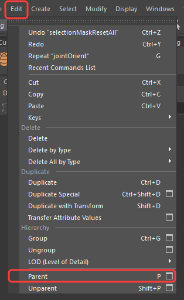
La tecla P es el atajo de Edit ▸ Parent. Unparent (Shift+P) deshace la relación.
① Brazo ▸ antebrazo ▸ mano en el Outliner. ② La mano ahora sigue al antebrazo.
El método funciona, pero al doblar el codo aparecen huecos entre las piezas. Para que una sola malla continua se doble de forma suave se requieren joints y skin, que se desarrollan a continuación.
Abra brazo_base.ma (el brazo izquierdo como una sola malla, brazo_GEO) y trabaje en la vista frontal.
Una cadena de joints se construye con la misma jerarquía de la parte 2: cada joint nuevo queda como hijo del anterior, de forma automática.
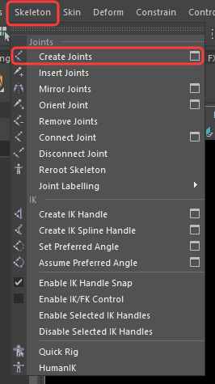
Skeleton ▸ Create Joints.
| Clic | Joint | Dónde se ubica |
|---|---|---|
| 1 | hombro_JNT | En la articulación del hombro, donde el brazo se une al torso. |
| 2 | codo_JNT | En la articulación del codo, aproximadamente a la mitad del brazo. |
| 3 | muneca_JNT | En la articulación de la muñeca, donde termina el antebrazo y comienza la mano. |
| 4 | mano_JNT | En el extremo de la mano. |
No se requieren posiciones exactas: cada estudiante obtendrá valores ligeramente distintos según su clic. Basta con respetar estos criterios.
① Hombro ② Codo ③ Muñeca ④ Mano. ⑤ Cada joint es hijo del anterior.
Si la malla impide ver los joints, active el modo transparente del visor:
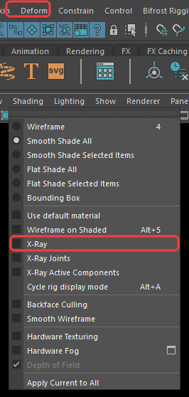
Shading ▸ X-Ray.
Si los joints se ven demasiado grandes o pequeños:
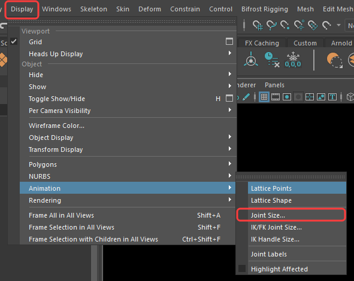
Display ▸ Animation ▸ Joint Size...
Cada joint tiene sus propios ejes (X, Y, Z). El objetivo es que el eje X apunte al siguiente joint y que el codo flexione alrededor de Z.
hombro_JNT (el primero de la cadena).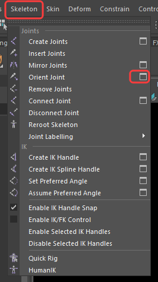
Skeleton ▸ Orient Joint ▸ ☐ (el cuadrito marcado en rojo abre las opciones).
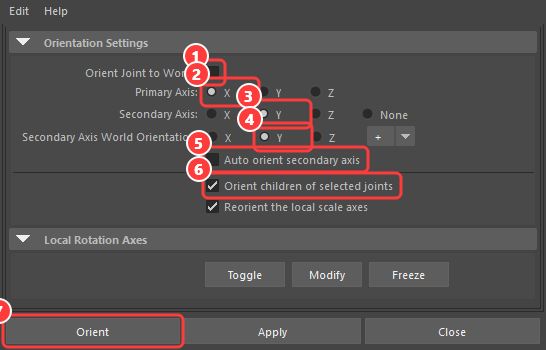
① Orient Joint to World: desmarcado. ② Primary Axis: X. ③ Secondary Axis: Y. ④ Secondary Axis World Orientation: Y (+). ⑤ Auto orient secondary axis: desmarcado. ⑥ Orient children of selected joints: marcado. ⑦ Orient.
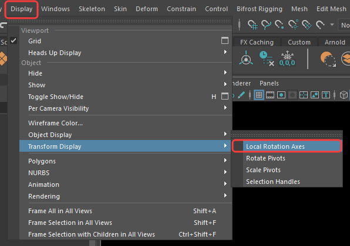
Display ▸ Transform Display ▸ Local Rotation Axes.
El eje X (rojo) de cada joint apunta al siguiente. El eje Z (azul) sale hacia el observador.
En los cuatro joints el eje X rojo debe apuntar hacia la mano. Si alguno apunta en otra dirección, repita Orient Joint con el hombro seleccionado y las opciones indicadas. Al terminar, desactive los ejes locales (mismo menú).
El resultado debe corresponder al de brazo_joints.ma.
FK (Forward Kinematics) es la forma más directa de mover un rig: se rota el hombro, luego el codo y luego la muñeca, de padre a hijo. Es el mismo principio de la parte 2: cada joint arrastra a sus hijos.
codo_JNT, pulse E y rote alrededor de Z (o escriba Rotate Z = 50 en el Channel Box).hombro_JNT y muneca_JNT. Cree tres poses distintas.① Se rota el joint; no se traslada. ② La malla permanece inmóvil: aún no está vinculada.
La malla no se movió porque ningún joint está vinculado a ella. Ese vínculo es el skin.
Antes de continuar, devuelva los joints a su estado inicial: seleccione los joints y escriba 0 en Rotate X, Y y Z.
La malla debe tener los Freeze Transformations aplicados. En brazo_base.ma ya están aplicados.
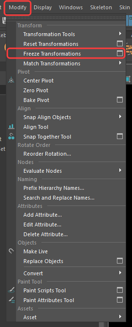
Modify ▸ Freeze Transformations.
En ningún momento de esta guía debe ejecutarse Edit ▸ Delete by Type ▸ History ni el botón equivalente del shelf. El rig depende del historial de construcción: al borrarlo sobre una malla con skin, Maya puede eliminar el vínculo con los joints o dejar la deformación dañada.
hombro_JNT y, con Shift, la malla brazo_GEO.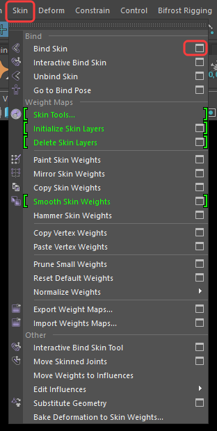
Skin ▸ Bind Skin ▸ ☐ (el cuadrito marcado en rojo).
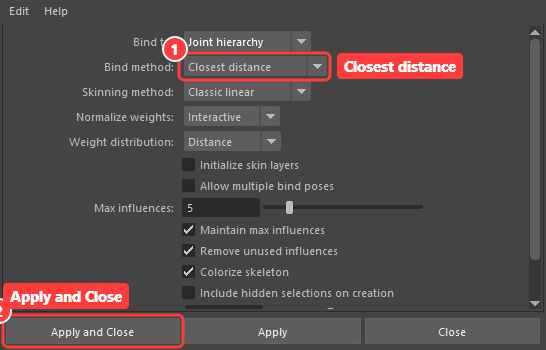
① Bind method: Closest distance. ② Apply and Close.
Rote el codo (Rotate Z = 60) y la muñeca (−20). La malla ahora se deforma junto con los joints.
La malla sigue al joint. Se observa cómo se suaviza el pliegue del codo.
Quite el skin, compruebe que se seleccionó el primer joint y la malla, y repita el bind. Para regresar a la pose original utilice Go to Bind Pose.
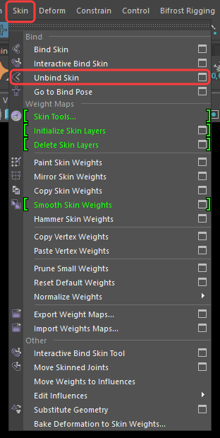
Skin ▸ Unbind Skin.
Skin ▸ Go to Bind Pose.
Cada vértice recibe un peso de cada joint cercano (la suma es 1). Un vértice junto al codo puede pertenecer en un 50 % al brazo y en un 50 % al antebrazo, y eso es lo que suaviza el pliegue.
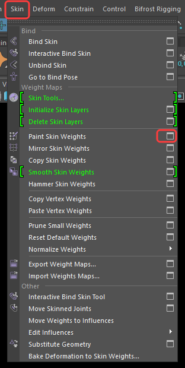
Skin ▸ Paint Skin Weights ▸ ☐ (el cuadrito marcado en rojo).
Pesos del hombro: blanco donde controla al 100 %, con un degradado alrededor del codo.
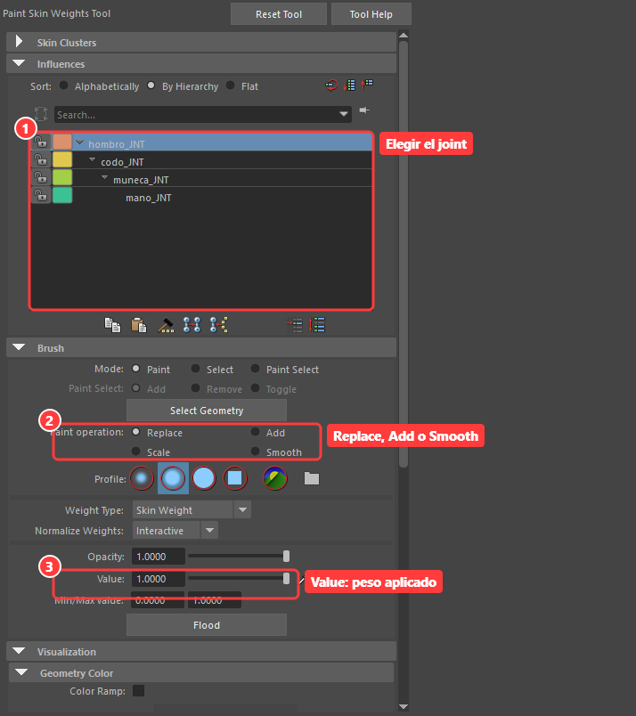
Ventana Tool Settings del Paint Skin Weights Tool. ① Joint a pintar. ② Operación. ③ Peso.
Elija codo_JNT, rote el codo y observe qué zona se deforma mal. Pinte con Smooth sobre el pliegue hasta que quede redondeado. Después pruebe lo contrario: pinte con Replace y Value 1 justo en el codo y analice qué ocurre.
El resultado debe corresponder al de brazo_skin.ma.
IK (Inverse Kinematics) es el procedimiento inverso a FK: el usuario mueve la mano y Maya calcula cómo deben rotar el hombro y el codo. Se emplea cuando la mano debe llegar a un punto exacto (agarrar un objeto) o cuando un pie debe permanecer apoyado.
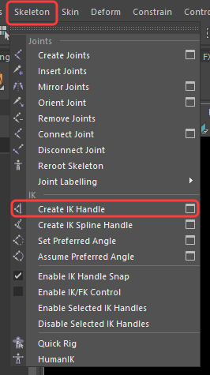
Skeleton ▸ Create IK Handle. Las opciones por defecto (solver Rotate-Plane Solver) son adecuadas.
hombro_JNT y después en muneca_JNT. Aparece un IK Handle en la muñeca. Cámbiele el nombre a brazo_IK.① El IK Handle está en la muñeca. ② Aparece en el Outliner.
① Se mueve el handle. ② El codo se acomoda solo. ③ Ik Blend = 1: controla el IK.
Con el IK Handle seleccionado, el Channel Box muestra el atributo Ik Blend. Con valor 1 controla el IK; con valor 0 controlan los joints, como en FK.
Ik Blend en 0: los joints se rotan manualmente de nuevo.
Con Ik Blend en 1 no deben rotarse los joints: el IK los controla. Para rotarlos, ponga Ik Blend en 0. El control de la dirección hacia la que apunta el codo (Pole Vector) se estudia en la clase del cuerpo.
El resultado debe corresponder al de brazo_ik.ma.
Aplicar sobre el brazo derecho del modelo (brazo_derecho_base.ma) el mismo proceso que se desarrolló en el brazo izquierdo: joints, orientación, skin e IK. Quien lo prefiera puede trabajar con un modelo propio, descargado o duplicado, siempre que el resultado sea equivalente.
_der (por ejemplo, hombro_der_JNT).El historial de construcción es el registro de cada paso del rig. Si se borra, el skin y los joints pueden dañarse y no es posible revisar ni corregir el proceso. Por eso:
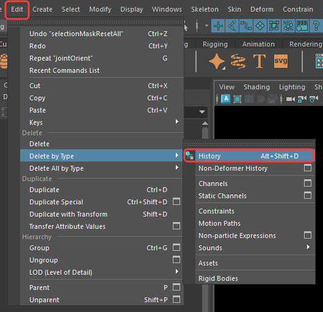
Edit ▸ Delete by Type ▸ History. No debe utilizarse.
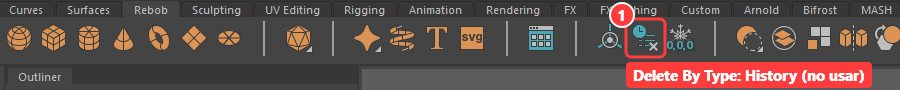
Botón del shelf Delete By Type: History. No debe utilizarse.
.ma) con los joints, el skin y el IK del brazo derecho, sin historial borrado. Nombre sugerido: Apellido_Nombre_brazo_rig.ma.Los brazos de las escenas de esta guía se obtuvieron del modelo completo. Este procedimiento solo es necesario para quienes trabajen con un modelo propio.
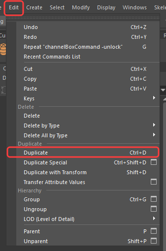
Edit ▸ Duplicate. Se trabaja sobre la copia; el original se oculta o se conserva aparte.
Marco de selección para conservar únicamente el brazo derecho del modelo (el lado −X, a la izquierda de la pantalla).
| Situación | Qué hacer |
|---|---|
| Se rota el joint y la malla no se mueve | No hay skin. Seleccione el primer joint y la malla, y aplique Bind Skin (parte 5). Si ya existe skin, compruebe en el Outliner que pertenezca a esa malla. |
| Maya indica que no puede realizar el bind | Seleccione primero el joint raíz y después (Shift) la malla. La malla no puede ser hija de los joints. |
| El codo gira hacia un lado inesperado | Los joints no están orientados. Seleccione el primer joint y repita Orient Joint (parte 3.3). Verifique con los ejes locales. |
| Se movió un joint después del skin y la malla se deformó | Deshaga (Ctrl+Z) o utilice Go to Bind Pose. Después del bind se rotan los joints; no se trasladan. |
| El pliegue del codo se ve deformado | Corrija los pesos con Paint Skin Weights y la operación Smooth. Al modelar, conviene incluir más líneas de malla (edge loops) en las articulaciones. |
| Los joints quedan ocultos dentro de la malla | Active el modo transparente del visor (Shading ▸ X-Ray, parte 3.1). |
| El IK Handle rota el brazo de forma extraña | Verifique que el codo conserve el doblez de la parte 3.2 (ligeramente por debajo de la línea hombro-muñeca) y cree de nuevo el IK Handle. |
| Se borró el historial por error | Deshaga de inmediato con Ctrl+Z. Si ya no es posible, abra la escena de apoyo de la parte en la que va y repita desde ahí. |
| La escena quedó irrecuperable | Abra la escena de apoyo de la parte en la que va (brazo_joints.ma, brazo_skin.ma o brazo_ik.ma) y continúe desde ahí. |
| Rig | Sistema de joints, skin y controles que permite mover un modelo. |
| Joint | Punto dentro de una jerarquía. Se rota para mover la malla a la que está vinculado. |
| Parent / hijo | Relación de padre e hijo: el hijo sigue al padre, y no al contrario. Se refleja en el Outliner. |
| Constraint | “Correa”: un objeto sigue a otro sin ser su hijo. Se estudia en la clase del cuerpo. |
| Pivote | Punto alrededor del cual rota un objeto. |
| Orientar | Ajustar los ejes de cada joint para que roten de forma predecible. |
| FK | Mover rotando cada joint de padre a hijo. |
| IK | Mover el extremo de la cadena (mano, pie) y dejar que Maya calcule los joints. |
| Skin | Vincular la malla a los joints. |
| Pesos | Cuánto controla cada joint a cada vértice. |
| Bind pose | Pose en la que se hizo el skin. Es el punto de partida. |
| Historial | Registro de las operaciones realizadas sobre un objeto. Permite revisar el proceso paso a paso. |